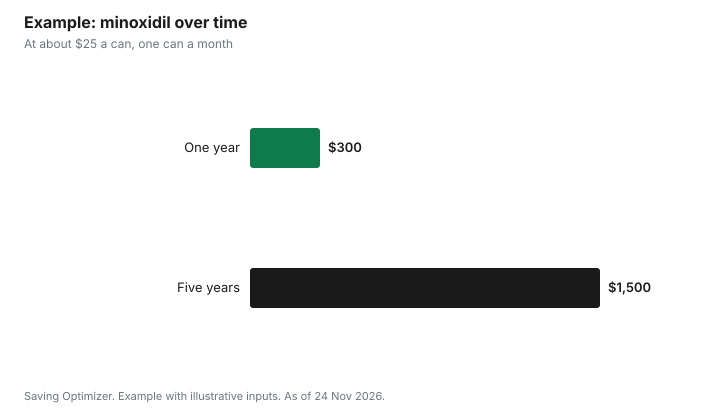

Personal Care · Canada
Hair Loss Products in Canada: Costs and Evidence (Link Healthcare)

The only hair loss product with strong evidence that you can buy off the shelf in Canada is topical minoxidil, and it only works while you keep using it. At Costco's six-pack price it's about $25 a can, or roughly $300 a year. See a doctor first: hair loss can have medical causes, and prescription options exist. If hair loss comes from illness or treatment, a wig can count as a medical expense.
Key takeaways
- Topical minoxidil is sold without a prescription and has the best evidence among store products.
- Costco: Rogaine 5% foam, six 60 g cans for $149.99, about $25 a can (checked 24 Nov 2026).
- Benefits stop if you stop using it.
- Special shampoos, biotin and serums have weak evidence.
- CRA: wigs count as medical expenses for abnormal hair loss from disease, treatment or accident, with a prescription.
Costs
| Product | Cost | Notes |
|---|---|---|
| Rogaine Men's Minoxidil Foam 5%, 6 x 60 g (Costco) | $149.99 | About $25 a can |
| Finasteride | Prescription | Ask your doctor and pharmacist for the generic price |
| Wig for medical hair loss | Varies | Eligible medical expense with a prescription |
What the evidence supports
- Minoxidil: approved for hereditary hair loss; results take months and fade if you stop.
- Finasteride: prescription only; discuss side effects with your doctor.
- Biotin, special shampoos and serums: little evidence unless you have a deficiency.
- Sudden or patchy hair loss: see a doctor, since it can signal another condition.

CRA medical expenses
The CRA lists wigs as an eligible medical expense when they're for someone with abnormal hair loss from disease, medical treatment or an accident, and a prescription is required. Keep the receipt and the prescription. Minoxidil bought without a prescription generally isn't eligible.
See the medical expense tax credit and personal care and health spending accounts.
Sources
- Canada Revenue Agency, RC4065 Medical Expenses (wigs), checked 24 Nov 2026.
- Costco Canada, Rogaine Men's Minoxidil Foam 5% 6 x 60 g (via CostClubWeekly price history), checked 24 Nov 2026.
Frequently asked questions
Does minoxidil work?
It has the strongest evidence among non-prescription products for hereditary hair loss, but results fade if you stop.
How much does minoxidil cost in Canada?
Costco listed a six-pack of Rogaine 5% foam at $149.99, about $25 a can, when checked on 24 Nov 2026.
Do I need a prescription for minoxidil?
Not for topical minoxidil. Finasteride needs a prescription.
Can I claim a wig on my taxes?
Yes, if it's for abnormal hair loss from disease, medical treatment or accident and you have a prescription.
Should I see a doctor about hair loss?
Yes, especially for sudden or patchy hair loss, which can have medical causes.
Researched and drafted with AI assistance and fact-checked against official Canadian sources. How we create content.
Note: Not medical advice. Talk to a doctor or pharmacist. Prices change. Education only.